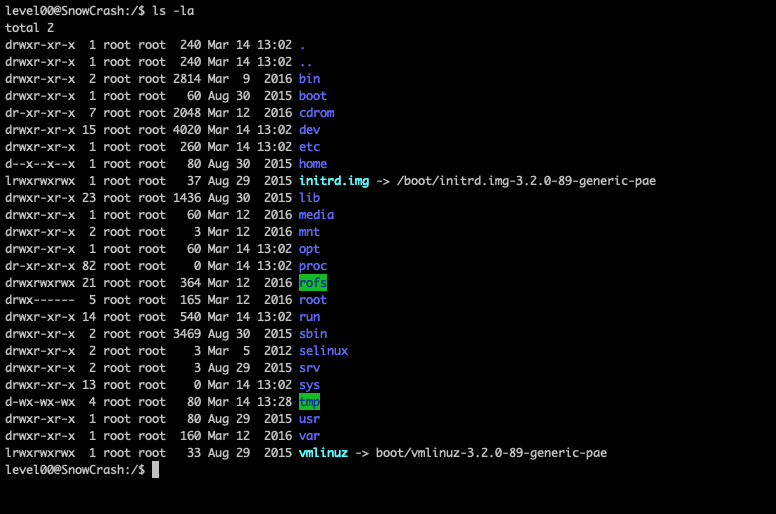
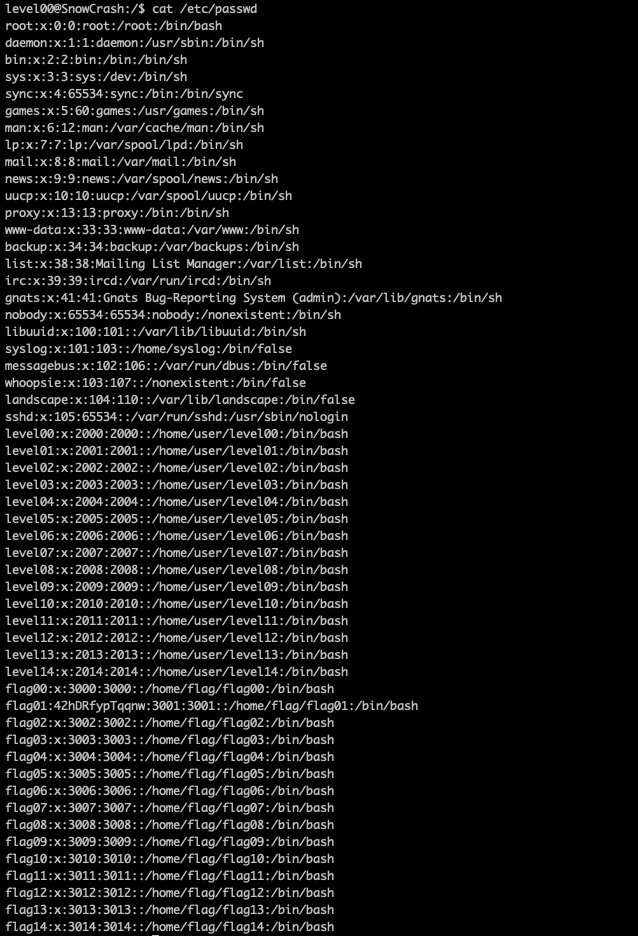
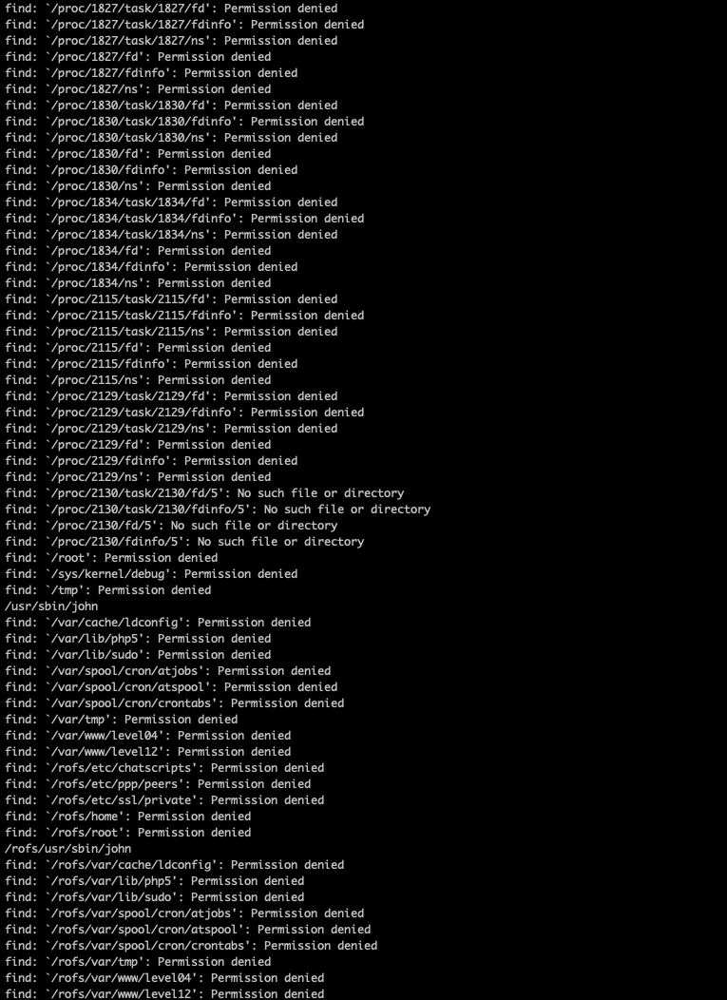
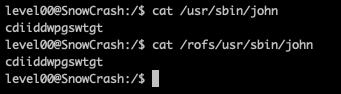
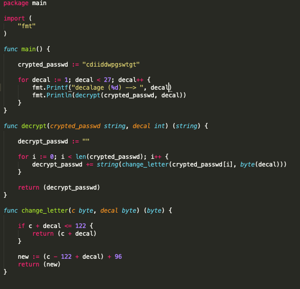
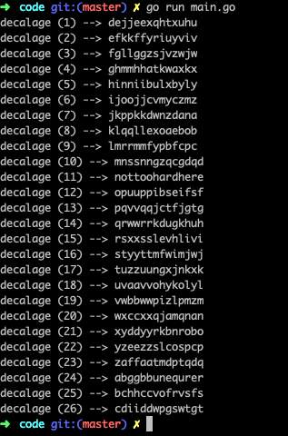
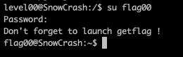
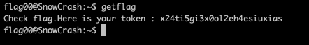

aller a la racine de la vm pour voir ce qu'il y a :
commande : cd /
regarder les doits sur chaques dossiers :
commande : ls -la
regarder le fichier /etc/passwd :
commande : cat /etc/passwd
On peut voir qu'il y a un x au niveau du password de flag00 cela veut dire qu'il est crypté dans le fichier /etc/shadow
regarder les droits du fichier /etc/shadow :
commande : ls -l /etc/passwd
On peut voir que l'on a pas les droits sur le fichier donc on vas utiliser une autre méthode
utiliser la commande find pour chercher les fichiers appartenant a flag00
commande : find / -user flag00 -group flag00 (-user : pour préciser l'utilisateur et -group pour préciser le group)
On peut voir 2 fichiers ou l'on a les droits dessus : /usr/sbin/john et /rofs/usr/sbin/john
Lire les fichiers
in : cdiiddwpgswtgt
Décrypter le mot de passe (ce n'est ni du sha ni du md5 donc en autre possibilité il reste le ROT)
Faire le code
Afficher toutes le possibilitées
Tester
Bon mot de passe : nottoohardhere
Recuperer le flag
getflag
